Singapore bivalve
slug
Berthelinia singaporensis
Family Juliidae
updated Jun 2020
Where
seen? This tiny slug is sometimes seen on Caulerpa seaweeds such as Bell
sea grape seaweeds and Delicate feathery green seaweed on some of our shores.
Several slugs may be seen on one clump of seaweed. It was first described as a new species in July 2015 and named after Singapore.
Features: A tiny
well camouflaged slug (0.5-1cm long). A pair of oval transparent 'shells'
with the slender slug in between. The slug is exactly the same colour
as the seaweed that it is found on. It has a pair of slender tentacles (rhinophores) with a sprinkling of white spots. |
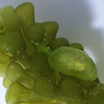
From the side.
Pulau Hantu, May 13 |
|
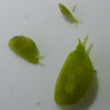
Several of various sizes often seen
close to one another.
Pulau Hantu, May 13 |
| Singapore bivalve
slugs on Singapore shores |
| Other sightings on Singapore shores |
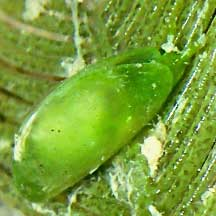
Changi Creek, May 21
Photo shared by Toh Chay Hoon on facebook.
|
|
|
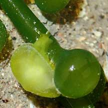
Pulau Ubin, Jun 21
Photo shared by Toh Chay Hoon on facebook.
|
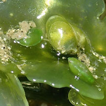
Chek Jawa, Jun 16
Photo shared by Toh Chay Hoon on facebook.
|
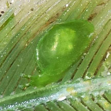
Chek Jawa, Jul 16
Photo shared by Loh Kok Sheng on facebook.
|
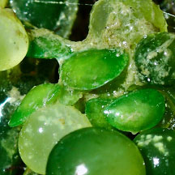
Pulau Sekudu, Aug 24
Photo shared by Chay Hoon on facebook. |
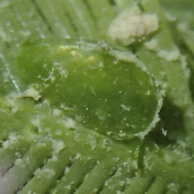
Pulau Sekudu, Jul 16
Photo shared by Toh Chay Hoon on facebook. |
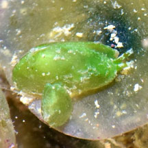
Pulau Sekudu, Jun 17
Photo shared by Loh Kok Sheng on facebook. |
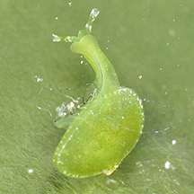
Beting Bronok, Aug 15
Photo shared by Toh Chay Hoon on facebook.
|
|
|
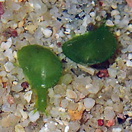
Cyrene, Aug 17
Photo shared by Toh Chay Hoon on facebook.
|
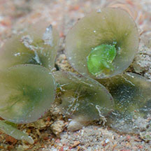
Chek Jawa, Jun 17
Photo shared by Marcus Ng on facebook. |
|
Links
References
- Kathe Jensen & Rene S. L. Ong
. 30 Sep 2016. Shelled sacoglossa from Lazarus and Saint John's Islands. Singapore Biodiversity Records 2016: 120-121.
- K. R. Jensen. Sacoglossa (Mollusca: Gastropoda: Heterobranchia) from northern coasts of Singapore. 10 July 2015. The Comprehensive Marine Biodiversity Survey: Johor Straits International Workshop (2012) The Raffles Bulletin of Zoology 2015 Supplement No. 31, Pp. 226-249.
- Debelius,
Helmut, 2001. Nudibranchs
and Sea Snails: Indo-Pacific Field Guide
IKAN-Unterwasserachiv, Frankfurt. 321 pp.
- Coleman,
Neville. 2001. 1001
Nudibranchs: Catalogue of Indo-Pacific Sea Slugs. Neville
Coleman's Underwater Geographic Pty Ltd, Australia.144pp.
|
|
|